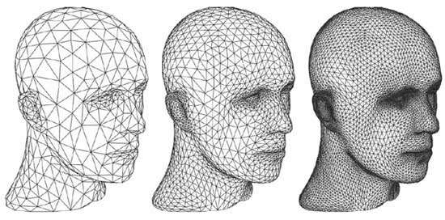

"Set your goals high, and don't stop till you get there." - Bo Jackson


The idea of programming just to solve a task at hand is quickly being supplanted by the need to create intelligent systems that are able to dynamically adapt and learn. There is a growing movement to create more flexible, adaptable, reflective systems to learn and infer from data at hand and deal with the unknown problems of the future. I aim to be at the forefront of this new movement and to create seamless data flow across all platforms, including the fastest growing platform, mobile devices and computing. Ubiquitious data, learning, and intelligence. These will be the pillars of computing in the near future.
To better position myself for future technologies and trends, I have focused my efforts on three key areas:
 Artificial Intelligence
Artificial Intelligence Mobile
Mobile Graphics
Graphics
Artificial Intelligence and Machine Learning
Artificial Intelligence is going to be the future of the technological world as we aim to create more intelligent and adaptive systems. I aim to be at the forefront of the new technology, and as a result I have aimed to train myself in Artificial Intelligence and Machine Learning through both course work and personal projects/research. As the amount of data in the world increases, it is important to be able to sift through, and learn from it. As the world around us becomes more complex and uncertain, it is important that we are able to create systems to make decisions and reason as best as possible. Please see my research and portfolio sections for more information on related projects, and my education section for a more detailed look at relevant coursework I have completed.
Mobile Development
Mobile technology and adoption is the most rapidly growing field. A market that didn't exist 10 years ago has now become a pillar of current software development. As users take these devices with them wherever they go, the data, software, and experiences are truly ubiquitious. I have familiarity with iOS and Windows8 mobile development, but am always expanding upon my skills to make sure that I am able to align myself with upcoming trends in the technological world. Please see my research and portfolio sections for more detail.
Graphics Development
 The ability to create visualizations of data, games, and general information is becoming more and more important as the technology and expectations of the masses continue to increase. In addition, as GPUs continue to become more powerful, these visualizations are moving towards 3D instead of 2D. I have experience using OpenGL and OpenCL/GLSL to create representations of data and games to present to a user. I have created interactive systems that present information in an effective and efficient manner. Please see my research and portfolio sections for more detail.